Side A A hi-res music player for Windows
Every bit, as it was recorded.
Resonance is a free player for people who care what reaches their ears. A 64-bit float engine, bit-perfect output when your device allows it, and a quiet window where the album art is the only colour.
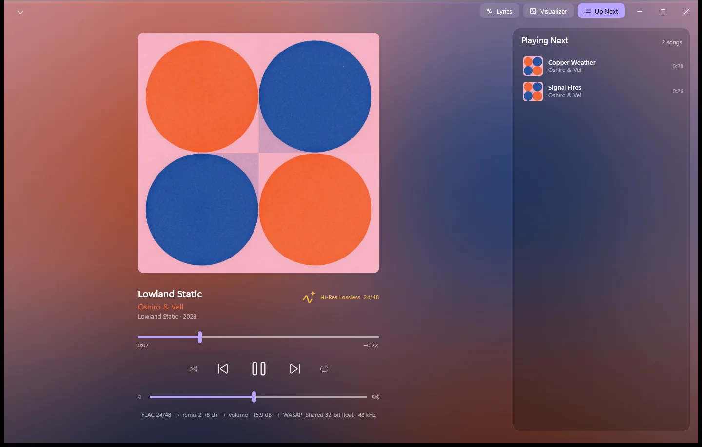
01 / Tracklist
Eleven reasons, in running order.
Side A The engine
- A1In-process FFmpeg decodingFFmpeg 8.1No external codecs and no helper processes.
- A2A 64-bit float pipelinef64Every stage, from decode to output, in double precision.
- A3WASAPI shared and exclusive, plus ASIO3 pathsPick the route to your DAC.
- A4Bit-perfect, when the device allowsbit-perfectAnd a readout that only says so when it’s true.
- A5Gapless playback, sample-accurate seekinggaplessLive albums and continuous mixes flow on.
- A6FLAC, ALAC, WAV, AIFF, DSD, MP3, AAC7 formatsDSD plays as PCM.
Side B The sound
- B110-band graphic, 20-band parametric EQ11 presetsPlus AutoEQ and EqualizerAPO import.
- B2Room correctionFIRLoad an impulse; it’s applied by convolution.
- B3Loudness normalisation and a true-peak limiterEBU R128Even levels without clipping.
- B4TPDF or noise-shaped ditherditherWhen the output needs fewer bits than the pipeline.
- B5Per-device sound profilesper deviceHeadphones and speakers keep their own settings.
02 / Signal
If anything touches the sound, it says so.
One line in Now Playing tells you exactly what reaches the device. Stages appear only while they’re active, and Bit-perfect appears only when nothing alters a single sample.
- sourceFLAC 24/96
- decodef64
- only if onEQ · room · loudness · spatial · volume
- outputWASAPI Exclusive 24/96
- verdictBit-perfect
FLAC 24/96 → decode f64 → WASAPI Exclusive 24/96 · Bit-perfectThe art is the only colour on screen.
A native WinUI 3 app in quiet, translucent glass. Albums open onto their own artwork; the chrome steps back. Nothing bounces for decoration.
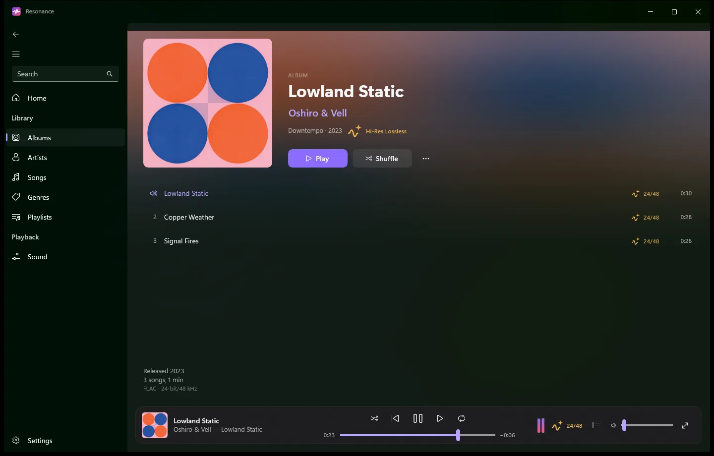
03 / Room
Shape it. Then hear it in the room.
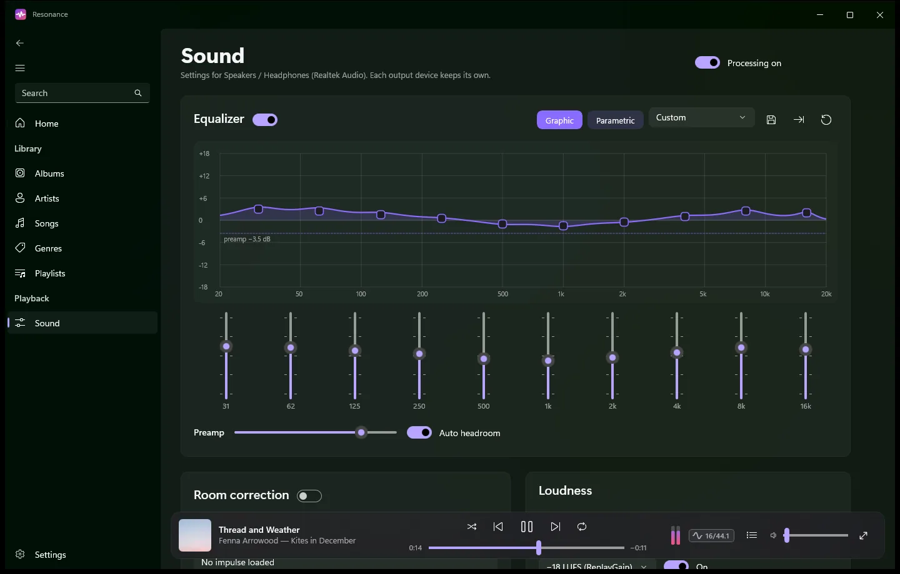
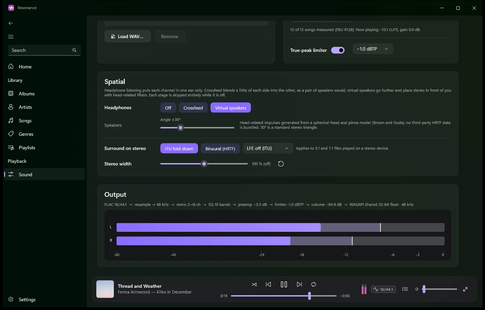
Headphones, meet the speakers you don’t have. Crossfeed in three flavours / Bauer, Chu Moy and Meier. Binaural rendering of 5.1 and 7.1 through an HRTF after Brown & Duda (1998), generated in the app. Virtual speakers at the angle you choose. Stereo width. And an ITU fold-down when a surround file meets a stereo device.
04 / Visuals
See it, measured.
Four instruments drawn at display rate. They take the artwork’s place in Now Playing when you want them.
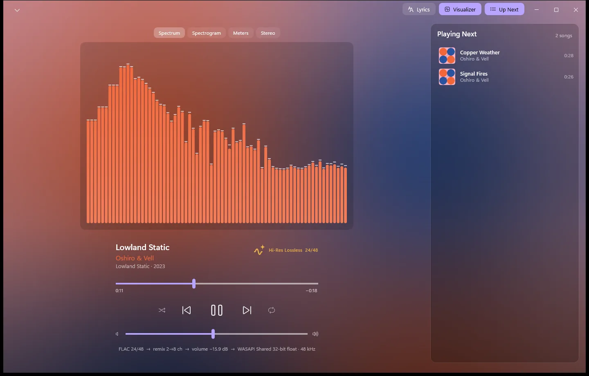
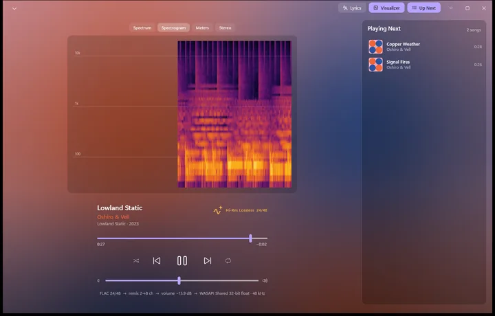
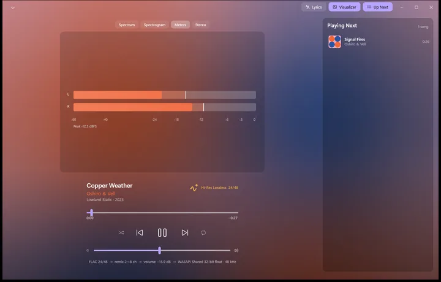
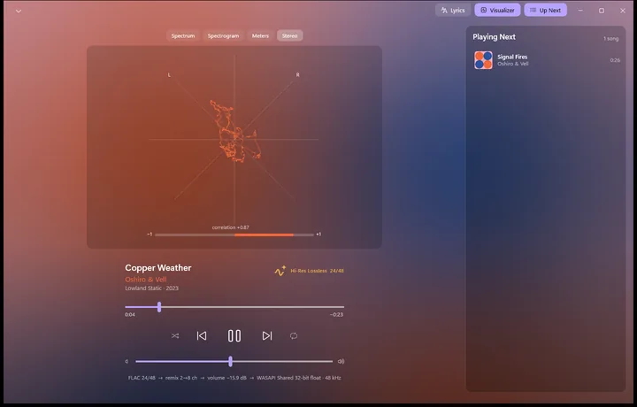
05 / Library
Your collection, kept close.
Paper wings above the frozen field
Holding on to what the wind won’t yield
Every string a word I didn’t say
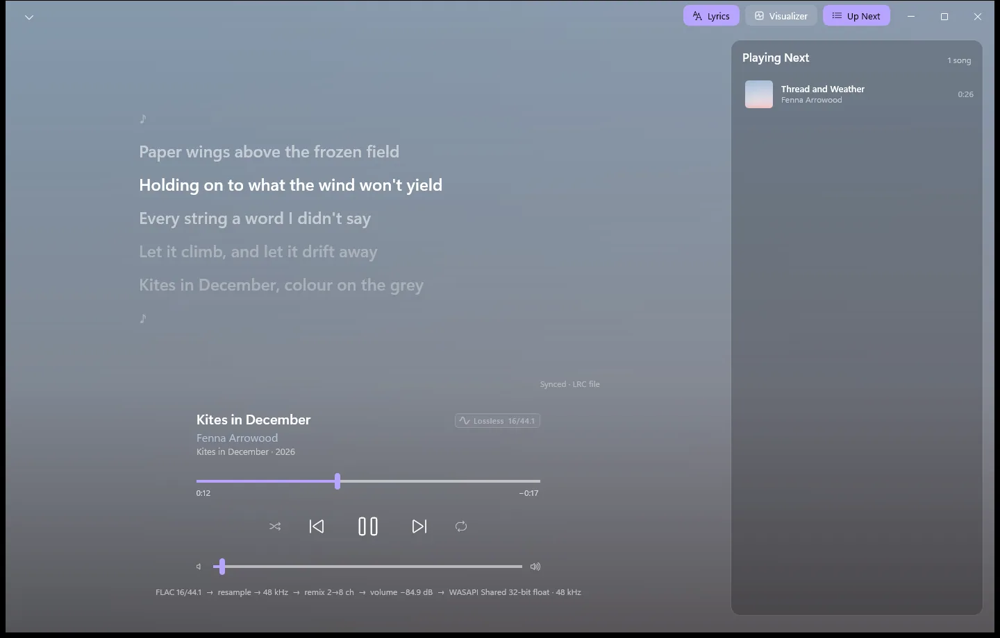
- i. A fast, incremental scan, and folders that are watched for changes.
- ii. Albums, artists, genres and songs, with search across them.
- iii. Synced lyrics from .lrc files and tags. Never fetched online.
- iv. Playlists, smart playlists that follow rules, and M3U8.
- v. A queue that is still there after a restart.
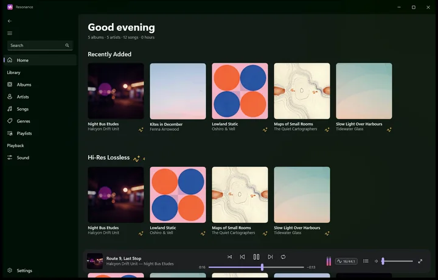
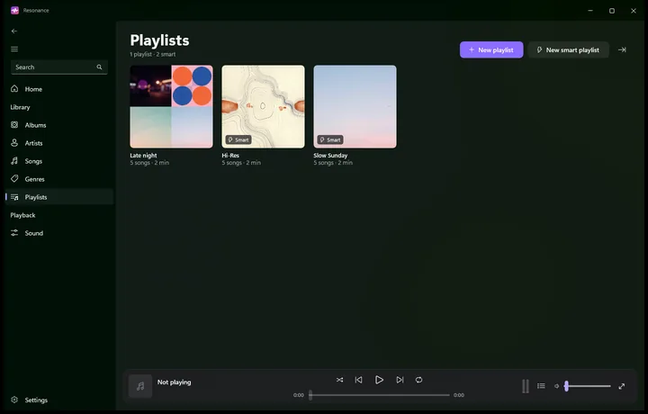
At home on Windows.
- W1 Media overlay & keys
- What’s playing, with its artwork, in the Windows media flyout. Hardware media keys just work.
- W2 Taskbar buttons
- Previous, play/pause and next on the thumbnail.
- W3 Jump list
- Right-click the taskbar icon for quick actions.
- W4 Verified updates
- The in-app updater checks every installer’s SHA-256 before it runs.
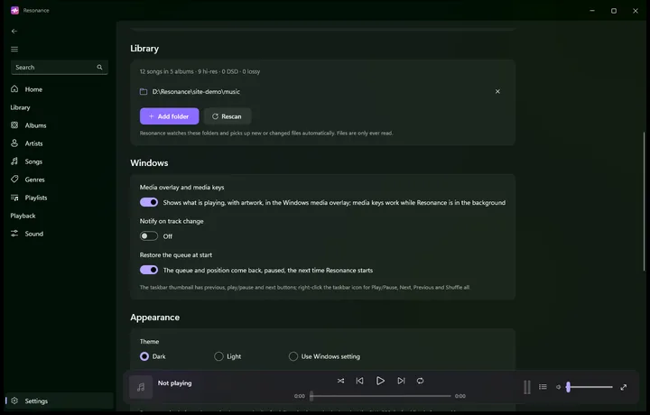
06 / Download
Take it home.
Free. Version 0.4.0, for Windows 10 and 11 on x64.
Download Resonance-Setup-0.4.0.exe
SHA-256
c4ac84117b65a674655ca6e43a2c841fcee2b1cb4e2a283499a9cc3f44733f12
Check it in PowerShell: Get-FileHash .\Resonance-Setup-0.4.0.exe
- Requires
- Windows 10 version 2004 (build 19041) or later, or Windows 11, on a 64-bit PC.
- Output
- Any WASAPI device; an ASIO driver for ASIO.
- Installs
- Per user, for your account only. No admin rights needed.
Windows SmartScreen may warn you because the installer isn’t code-signed yet. Choose More info, then Run anyway. Compare the SHA-256 above first if you’d like to be sure.